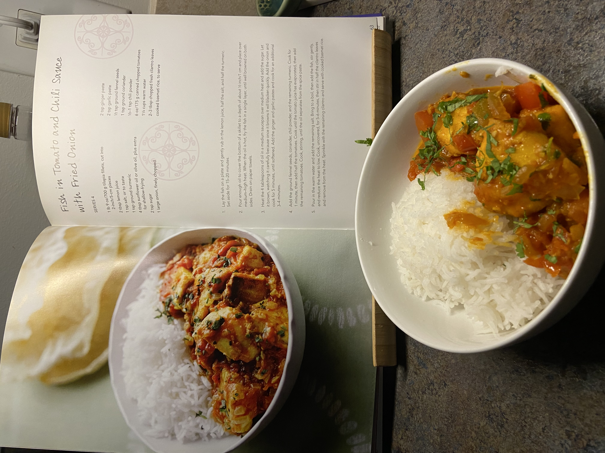
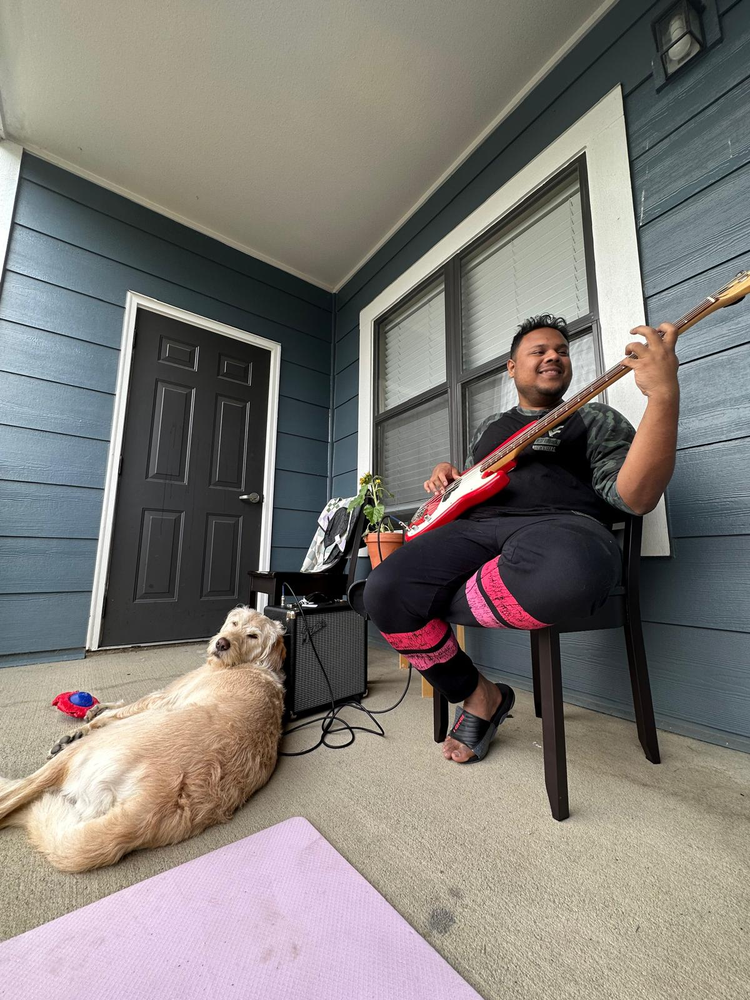
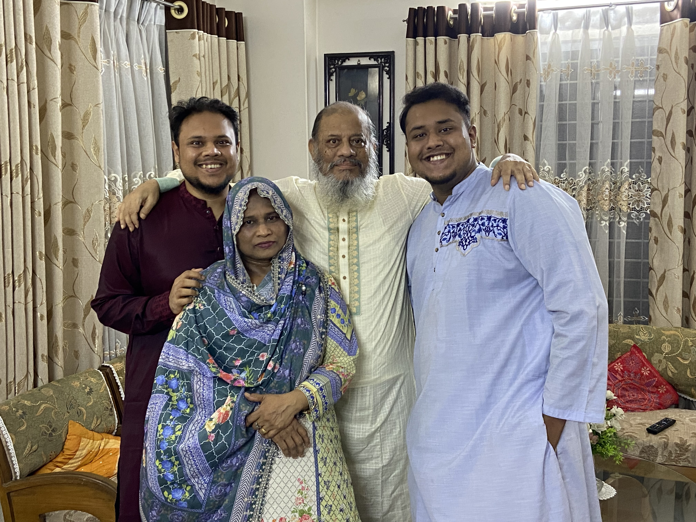
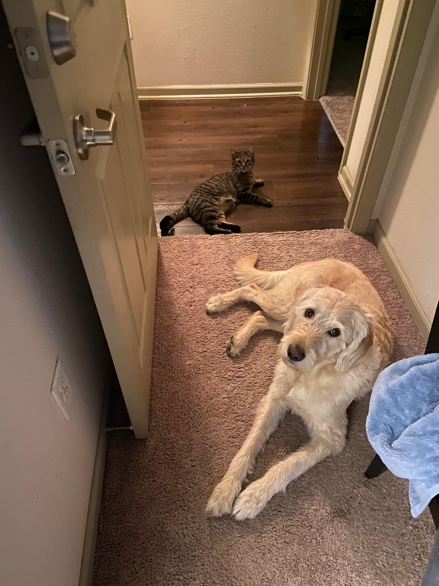
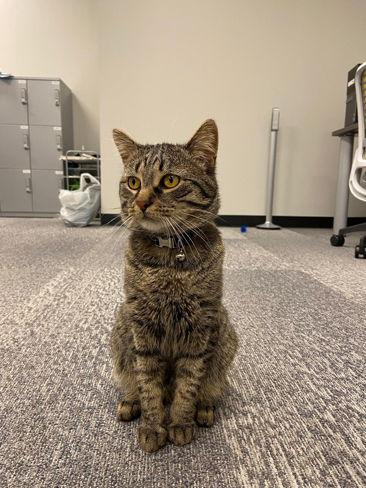

About Me
Hello, I’m Mustahsin-Ul Aziz , an applied economist, policy practitioner, and researcher passionate about tackling some of the most pressing environmental and development challenges of our time. I bring together rigorous academic methods and on-the-ground policy experience to design solutions that matter.
I am currently pursuing a Ph.D. in Environmental & Natural Resource Economics at West Virginia University, where I specialize in remote sensing, machine learning, and advanced econometrics to study how environmental quality shapes economic and social outcomes. My research spans multiple fronts: from examining the trade-offs workers make to live in greener cities, to analyzing how upstream agriculture affects downstream water quality, to exploring community resilience in wildfire-affected regions. I also work at the urban and regional scale, developing methods to quantify street-level environmental amenities, and contribute to energy transition research, pursuing energy growth while supporting economic growth and reducing greenhouse gas emissions.
Before academia, I spent several years at the World Bank, managing projects worth over $1 billion across South Asia. I helped design and deliver large-scale education reforms, contributed to green infrastructure initiatives, while designing the next generation education projects for South Asia. I also led a randomized control trial that successfully reduced tobacco consumption in rural Bangladesh. These experiences sharpened my ability to bridge research and policy, translating evidence into programs that improve lives.
Outside of work, I enjoy traveling, cooking, and experiencing different cultures. I love experimenting with new recipes and biryani is a favorite. I enjoy walking through new cities, where I often find myself learning the stories of people along the way. These personal encounters and small discoveries inspire the same curiosity and creativity that I bring to my research.
I see myself not just as an economist, but as a connector of ideas, methods, and people. If you’re interested in environmental economics, innovative measurement methods, or just the best way to spice up a dish, I’d love to connect.




